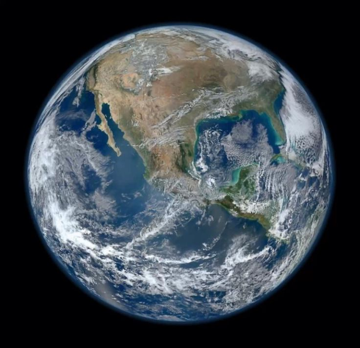
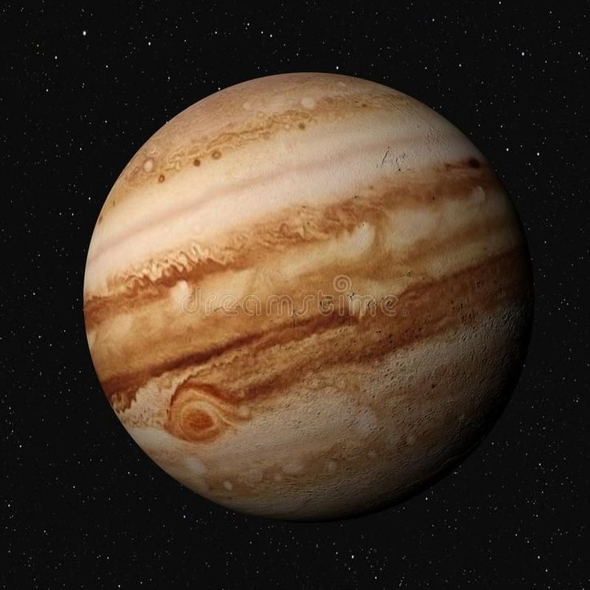
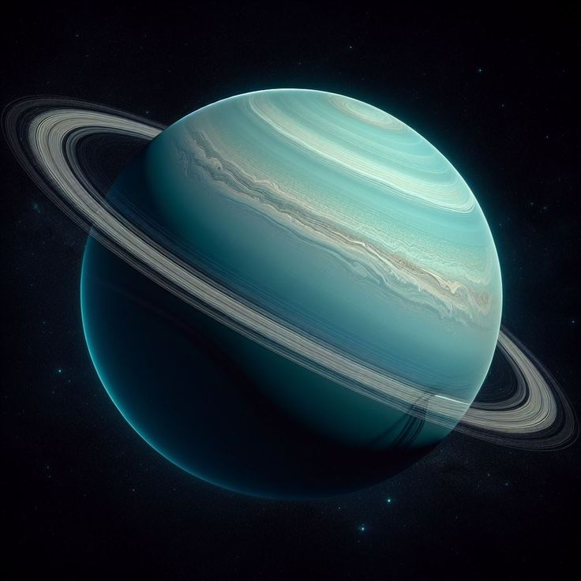
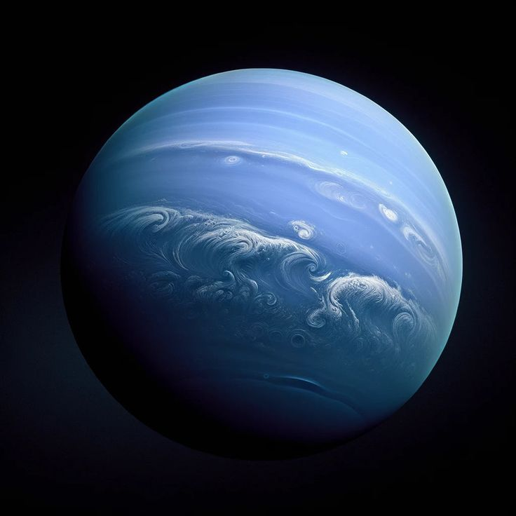
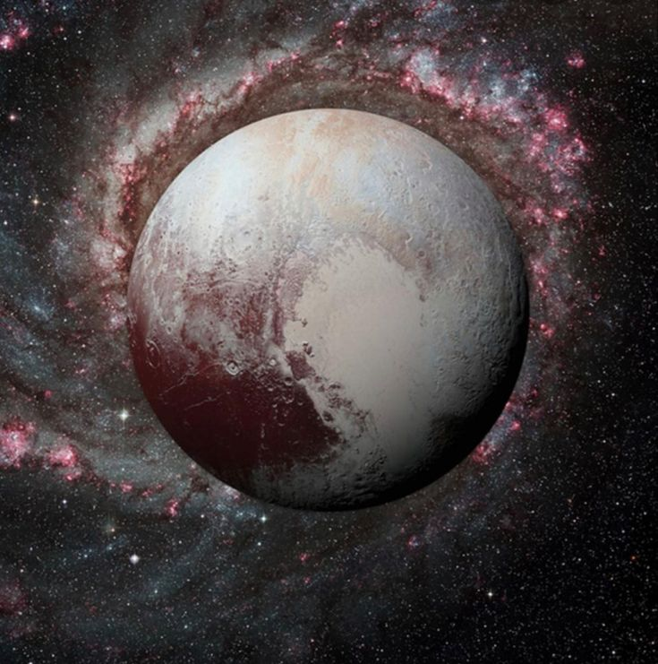

Mercure

Distance au Soleil : 57.9 millions de km
Masse : 0.33 x 10^24 kg
Diamètre : 4,880 km
Température moyenne : 167°C
Description : Mercure est la planète la plus proche du Soleil...
Vénus

Distance au Soleil : 108.2 millions de km
Masse : 4.87 x 10^24 kg
Diamètre : 12,104 km
Température moyenne : 464°C
Description : Vénus est la planète la plus chaude du Système Solaire...
La Terre
Distance au Soleil : 149.6 millions de km
Masse : 5.97 x 10^24 kg
Diamètre : 12,742 km
Température moyenne : 15°C
Description : La Terre est la seule planète connue pour abriter la vie...
Mars

Distance au Soleil : 227.9 millions de km
Masse : 0.64 x 10^24 kg
Diamètre : 6,779 km
Température moyenne : -63°C
Description : Mars est la planète rouge, connue pour ses paysages désertiques...
Jupiter
Distance au Soleil : 778.3 millions de km
Masse : 1898 x 10^24 kg
Diamètre : 139,820 km
Température moyenne : -108°C
Description : Jupiter est la plus grande planète du Système Solaire...
Saturne

Distance au Soleil : 1,429 millions de km
Masse : 568 x 10^24 kg
Diamètre : 116,460 km
Température moyenne : -139°C
Description : Saturne est célèbre pour ses magnifiques anneaux...
Uranus
Distance au Soleil : 2,871 millions de km
Masse : 86.8 x 10^24 kg
Diamètre : 50,724 km
Température moyenne : -197°C
Description : Uranus est la planète qui tourne sur le côté, son axe est presque parallèle au plan de son orbite...
Neptune
Distance au Soleil : 4,495 millions de km
Masse : 102 x 10^24 kg
Diamètre : 49,244 km
Température moyenne : -201°C
Description : Neptune est la planète la plus éloignée du Soleil et possède des vents très puissants...
Pluton
Distance au Soleil : 5,906 milliards de km
Masse : 1.303 x 10^22 kg
Diamètre : 2,377 km
Température moyenne : -229°C
Description : Pluton est une petite planète naine située à l'extrémité du Système solaire...